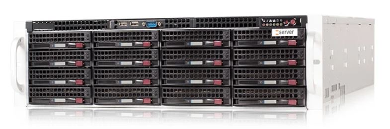

System wsparcia dystrybucji mediów domowych w czasie pandemii
Realizacja sprzętowa
Serwer główny
Serwer aplikacji
Cyfrowy licznik zużycia mediów (SIM + WiFi)
Kontenery wyposażone w czujniki poziomu napełnienia (protokół LoRa)
Infrastruktura sieci lokalnej z dostępem do Internetu u klienta końcowego
